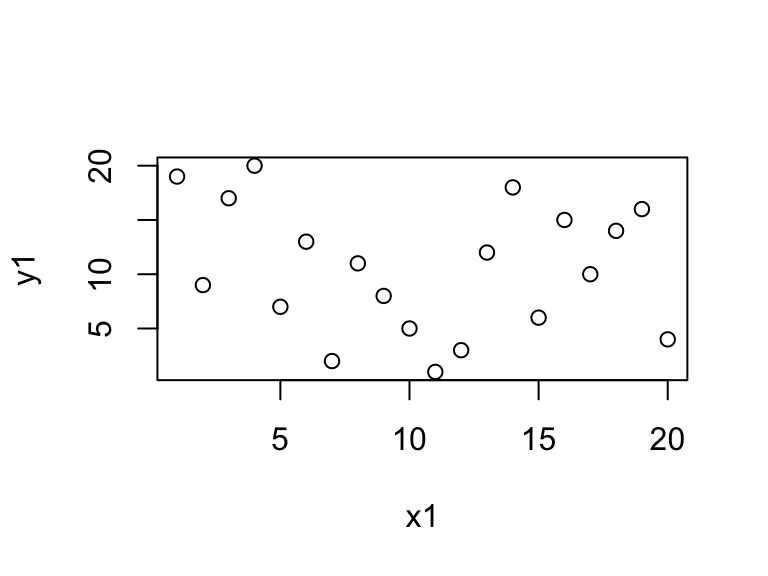

Chapter 7 Data Visualization
Visualizing your data is crucial because it helps you understand the patterns, trends, and relationships within the data. A well-designed visualization can make complex data easy to understand and convey insights that would be hard to discern from raw data.
At the end of this chapter you should be able to:
1. Understand the need for visualization
2. Create some simple plots of points, lines and bars
3. Manipulate how a plot looks
Anscombe’s quartet is a classic example that demonstrates the importance of visualizing your data. This quartet comprises four datasets with nearly identical simple descriptive statistics. However, when graphed, they have very different distributions and appear very different from one another. This example shows that relying solely on summary statistics to understand data can be misleading and inadequate.
| set | mean_x | var_x | mean_y | var_y | intercept | slope | r.squared |
|---|---|---|---|---|---|---|---|
| A | 9 | 11 | 7.500909 | 4.127269 | 3.000091 | 0.5000909 | 0.6665425 |
| B | 9 | 11 | 7.500909 | 4.127629 | 3.000909 | 0.5000000 | 0.6662420 |
| C | 9 | 11 | 7.500000 | 4.122620 | 3.002454 | 0.4997273 | 0.6663240 |
| D | 9 | 11 | 7.500000 | 4.126740 | 3.000000 | 0.5000000 | 0.6663856 |

In data analysis, creating a plot to convey a message or demonstrate a result is a common endpoint. To achieve this, this book utilizes the GGPlot2 package, which is part of the Tidyverse. This package complements the data pipelining demonstrated in the previous chapters, making it a perfect choice for creating a wide range of plots, from simple scatter plots to complex heat maps, making it ideal for data visualization.
7.1 Base: plot
R comes standard with the fairly basic plotting function plot(). While this function forms the basis for all plotting interactions in R, it can be greatly extended with additional packages. Two such packages will be explored in this chapter, GGplot2 and Plotly. The former is great for static publication quality plots, of which you will begin to recognize, while the latter provides stunning interactive graphics suitable for web development and Shiny applications.


7.2 GGPlot
7.2.1 Syntax
The motivation behind GGplot is based on the grammar of graphics such that
“the idea that you can build every graph from the same few components”
Ideally this accomplishes dual goals of allowing you to quickly construct plots for initial analyses and checking for oddities (as explained above) and following the logical process of the plot construction.
To graph in GGPlot there are a few core embodiments that need to be considered.
| data | a table of numeric and/or categorical values | data.frame or tibble |
| geom | a geometric object or visual representation, that can be layered | points, lines, bars, boxs, etc. |
| aesthetics | how variables in the data are mapped to visual properties | eg. x = col_a, y = col_b |
| coordinate | orientation of the data points | eg. cartesian (x,y), polar |
# the basic structure
ggplot(data, aes(x,y)) + geom_point() + coord_cartiesian()
# combined with dplyr makes for a readable process
data %>% ggplot(aes(x,y)) + geom_point()In this example the ggplot() function contains the two components, the data table data and mapping function aes(). Since GGPlot follows a layered modality, the ggplot() function “sets” the canvas and passes the data table data and mapping function aes() to all the functions that follow with the + operator.
Lets create some data …
7.2.2 Basic Data Plotting
Points and Lines
Points and lines graphing is a simple way of representing data in a two-dimensional space. In this graph, we use points to represent individual data values, and lines to connect them. The x-axis usually represents the independent variable while the y-axis represents the dependent variable - or in other words, what y was observed while measuring x.
To plot a point, we use an ordered pair of values (x, y) that correspond to the position of the point on the graph. For example, the point (2, 5) would be plotted 2 units to the right on the x-axis and 5 units up on the y-axis.
We can also connect points with lines to show a trend or pattern in the data. These lines can be straight or curved, depending on the nature of the data. A straight line can be drawn to connect two points or to represent a linear relationship between the variables.
p01 <- tbl_mz %>% ggplot(aes(mz, int)) + geom_point()
p02 <- tbl_mz %>% ggplot(aes(mz, int)) + geom_line()
p03 <- tbl_mz %>% ggplot(aes(mz, int)) + geom_point(color='red') + geom_line(color='black')
p04 <- tbl_mz %>% ggplot(aes(mz, int)) + geom_line(color='black') + geom_point(color='red')It’s important to take note of the difference between plots p03 and p04. While both plots showcase a similar data representation, a closer look reveals a notable difference. Specifically, in the latter plot (p04), we can see that the red points appear under the black line. This occurs because the points were layered first, and then the lines were layered over them. This is a crucial distinction to make as it highlights the importance of the order in which layers are applied in the plot.

Segments
Line segments are an important concept in geometry and are used in various applications. A line segment is a part of a line that is bounded by two distinct end points. It is also a default representation of centroided mass spectra. In this case the segment will start and end on the same x (mz), while the y (int) component will end at 0.

Bar Chart
When it comes to representing categorical data, bar charts are considered to be the most effective visualization tool. Bar charts are simple, yet powerful, and can be used to display data in a clear and concise way. They are easy to read and understand, and are a popular choice among data analysts, researchers, and business professionals. Whether you’re trying to visualize sales data, survey results, or demographic information, bar charts are a great option to consider. So, if you’re looking for a way to represent categorical data, consider using a bar chart for the most accurate and comprehensive representation.

Pie Chart
You maybe considering a pie chart, which is a circular diagram divided into sectors, with each sector representing a proportion of the whole. It is commonly used to display percentages, where the sum of the sectors equals 100%. There is no specific geom to build a pie-chart with ggplot2. The trick is to build a barplot and use coord_polar() to make it circular. However, interpreting pie charts can be challenging since humans are not very skilled at reading angles. For instance, it is often difficult to determine which group is the largest and to arrange them by value. As a result, it is advisable to refrain from using pie charts.
p07 <- tbl_mz %>% ggplot(aes(class, fill=class)) + geom_bar()
p08 <- tbl_mz %>% ggplot(aes(class, fill=class)) + geom_bar() + coord_flip()
p09 <- tbl_mz %>% ggplot(aes(1, fill=class)) + geom_bar(position = 'fill') + coord_polar(theta = 'y') Note how difficult it is in the pie chart to tell (by eye) that A is the smallest.
Note how difficult it is in the pie chart to tell (by eye) that A is the smallest.
7.2.3 Data Distributions
In statistics, a distribution refers to the way in which a set of data is spread out or dispersed. It describes the pattern of values that a variable can take and how frequently each value occurs. A distribution can be characterized by its shape, center, and spread, and can be represented graphically using tools such as histograms, box plots, and density plots.
Histograms
A histogram is a graphical representation of the distribution of a dataset. It is a type of bar chart that displays the frequency of data values falling into specified intervals or ranges of values, known as bins. The x-axis of the histogram represents the bins or intervals, and the y-axis represents the frequency or count of values falling into each bin.
Histograms are widely used to summarize large datasets and identify patterns or trends and to visualize the shape of a distribution, whether it is symmetric or skewed, and whether it has any outliers or gaps in the data. They can also be used to compare the distributions of two or more datasets, by plotting them on the same graph with different colors or patterns.

Density
A density plot is a graphical representation of the distribution of a dataset. It is formed by smoothing the data values and representing them as a continuous probability density function. The density plot is a variation of the histogram that provides a smoother representation of the data, eliminating the need for binning. It is particularly useful when the data is continuous and the sample size is large. The density plot can be used to identify the shape of the distribution, the presence of multiple modes, and the presence of outliers. Again, it can also be used to compare the distributions of two or more datasets by overlaying them on the same plot.

Box-Plot
One of the most commonly used types of plots in GGplot2 is the box plot. A box plot is used to display the distribution of a continuous variable. It shows the median, interquartile range, and any outliers present in the data.
Box plots are useful in scientific analysis because they allow us to quickly see the distribution of a variable and identify any potential outliers. They are particularly useful when comparing the distribution of a variable across different groups or categories. For example, we may use a box plot to compare the distribution of values across different class levels.
To create a box plot in GGplot2, we use the geom_boxplot() function. We specify the variable we want to plot on the y-axis and any grouping variables on the x-axis.

7.2.4 Extended Syntax
One way to enhance the functionality of ggplots is by using additional modifiers. These modifiers can help you to create more intricate and detailed visualizations that better represent your data. By tweaking the parameters of your ggplots, you can create visualizations that are more informative, aesthetically pleasing, and tailored to your specific needs. Whether you want to adjust the color scheme, add annotations, or modify the axis labels, additional modifiers can help you to achieve your desired outcome.
Colors
We saw a bit how to adjust colors in the previous plots. The two color arguments to consider are color, which modifies the point, line and edge color, and fill, which modifies the internal color of a shape for plots such as geom_bar and geom_histogram.
p13 <- tbl_mz %>%
ggplot(aes(log10(int))) +
geom_histogram(color = 'blue', fill = 'purple', binwidth = 1)
p14 <- tbl_mz %>%
ggplot(aes(log10(int))) +
geom_density(color = 'red', fill = 'orange') Colors can also take on a transparency called
Colors can also take on a transparency called alpha, which allows one layer to show through when two or more are plotted together.
p15 <- tbl_mz %>%
ggplot(aes(log10(int))) +
geom_density(aes(fill = class))
p16 <- tbl_mz %>%
ggplot(aes(log10(int))) +
geom_density(aes(fill = class), alpha = .25)
Scales
GGplot2 is a popular data visualization package in R that allows users to create stunning and insightful visualizations. One of the key features of GGplot2 is its ability to handle scales, which are critical for displaying data accurately and effectively. In this document, we will explore how to use scales in GGplot2, specifically for log10 and manual scales.
Log10 Scale
Logarithmic scales are useful when the data spans several orders of magnitude. GGplot2 makes it easy to create log10 scales using the scale_y_log10() and scale_x_log10() functions.
Using the same examples from above, yet instead of applying the log10() function directly to the variable, we can apply it to the scale instead.
p17 <- tbl_mz %>%
ggplot(aes(int)) +
geom_histogram(aes(fill = class), position = 'identity', alpha = .5, binwidth = 1) +
scale_x_log10()
p18 <- tbl_mz %>%
ggplot(aes(int)) +
geom_density(aes(fill = class), alpha = .25) +
scale_x_log10()
This results in a plot where the y-axis is scaled logarithmically, making it easier to see the differences between the different car classes. Note, that when we specified the binwidth = 1 in the geom_histogram(), GGplot2 applied that to the log10 space specified from the scale_x_log10().
Manual Scales
Sometimes, we may want to manually define the scale for our plots. For example, we may want to create a plot where the y-axis only shows values between 0 and 10. We can do this using the scale_y_continuous() function in GGplot2.
Here is an example of how to use the scale_y_continuous() function to manually define the y-axis scale:
p19 <- tbl_mz %>%
ggplot(aes(mz, int)) +
geom_segment(aes(xend = mz, yend = 0)) +
scale_y_continuous(n.breaks = 13) +
scale_x_continuous(n.breaks = 5, limits = c(500,1500))
In this example, we added a manual scale to both the x- and y-axis using the scale_x_continuous() and scale_y_continuous() functions, respectively, and specifying the number of breaks n.breaks = and the limits limits =.
Faceting
Faceting is a powerful feature in ggplot2 that allows us to split a single plot into multiple small plots based on a categorical variable. It enables us to visualize complex data patterns and relationships in a more understandable way. There are two types of faceting in ggplot2: facet_wrap and facet_grid.
facet_wrap
facet_wrap creates a grid of plots by wrapping the facets from left-to-right and top-to-bottom in the plot. Each facet is displayed in a separate panel, and the panels are arranged in rows and columns based on the levels of the specified categorical variable.
 In this example, we are reused ggplot object
In this example, we are reused ggplot object p17 and created two additional plots. The facet_wrap function is used to split the plot into multiple panels based on the categorical variable class using the tilde . ~ class. In this case, the dot . prior to the tilde ~ tells ggplot to consider only a single variable, class as we had defined it. You can think of the tilde as a type of function this 'by' that or y ~ x. This becomes more important in the facet_grid() function. Notice in the p21 plot we set the scales free, allowing each facet to dictate x and y plot scales.
facet_grid
facet_grid creates a grid of plots by specifying one or more categorical variables that define the rows and columns of the grid. It allows us to create more complex faceted plots than facet_wrap. In this example we will randomly add a new varaible called group that will allow us to create the y direction of the facet.
tbl_new <- tbl_mz %>%
mutate(group = sample(c('positive', 'negative'), n_peaks, replace = TRUE))
p22 <- tbl_new %>%
ggplot(aes(int)) +
geom_histogram(binwidth = 1) +
scale_x_log10() +
facet_grid(group ~ class) To illistrate the difference between
To illistrate the difference between facet_wrap() and facet_grid() consider what happens when a set of data is missing. Note in p24 it is not immediately intuitive in facet_wrap() that c-negative is missing, where as in facet_grid(), the layout highlights this realization.
tbl_new <- tbl_mz %>%
mutate(group = sample(c('positive', 'negative'), n_peaks, replace = TRUE))
w <- which(tbl_new$class == 'C' & tbl_new$group == 'negative')
p23 <- tbl_new[-w, ] %>%
ggplot(aes(int)) +
geom_histogram(binwidth = 1) +
scale_x_log10()
p24 <- p23 + facet_wrap(group ~ class)
p25 <- p23 + facet_grid(group ~ class)
Style
Creating a plotting style can help you to quickly improve the appearance of your plots and make them more consistent with your brand. When working with data visualization, it’s important to keep in mind that the appearance of your plots can significantly impact the way your audience interprets your data. GGplot2 themes and colors offer an easy way to create professional-looking visualizations that will make your data stand out.
Themes
To apply a theme to your plot, you simply need to call the theme() function and specify the name of the theme you want to use. Some of the most popular themes include:
theme_gray(): A simple, gray background with white gridlines.theme_dark(): A simple, gray background with white gridlines.theme_classic(): A classic black and white theme with no gridlines.theme_minimal(): A minimalistic theme with no background or gridlines.theme_bw(): A black and white theme with gray gridlines.
You can also create your own custom themes by modifying various theme elements. For example, you can change the background color, font, and size of the plot elements. To do this, you can use the element_*() functions. For example, the element_text() function allows you to modify the font size, color, and family of your text.
Another great feature of GGplot2 themes is that they allow you to maintain consistency across multiple visualizations. If you’re creating a series of plots, applying the same theme to each one will give your work a more polished and professional look.
p28 <- p12 + theme_gray() # default
p29 <- p12 + theme_dark()
p30 <- p12 + theme_light()
p31 <- p12 + theme_classic()
p32 <- p12 + theme_minimal()
p33 <- p12 + theme_bw()
Colors
In addition to applying a theme to your layout, you can should also consider the color scheme. GGplot2 is a powerful data visualization package in R that allows users to create beautiful and informative graphs. The package is highly customizable, and one of its most important features is the ability to customize colors using Brewer and manual color scales.
Brewer Color Scales
The Brewer color scales in GGplot2 are color palettes that have been specifically designed to be distinguishable by people with color vision deficiencies. These color scales are useful when creating visualizations where color is used to convey information.
The Brewer palettes are particularly useful because they are carefully curated to ensure that the colors are distinguishable from one another, even for individuals with color vision deficiencies. This makes them a great option for creating informative data visualizations.
To use Brewer color scales in GGplot2, you can simply specify the name of the color scale as an argument to the scale_color_brewer() or scale_fill_brewer() functions. Other popular Brewer color scales include Blues, Greens, Oranges, and Purples. By using these scales, you can create beautiful visualizations that are both aesthetically pleasing and informative.
Manual Color Scales
In addition to the Brewer color scales, GGplot2 also allows users to specify custom color scales using the scale_color_manual() or scale_fill_manual() functions. These functions take a vector of colors as an argument, which can be specified using names, hex codes, or RGB values.
Manual color scales are particularly useful when you want to use specific colors that are not included in the Brewer palettes. For example, if you are creating a visualization for a company and you want to use the company’s brand colors, you can specify the colors using a manual color scale.
p34 <- p31
p35 <- p31 + scale_fill_brewer(palette = 'Set1')
p36 <- p31 + scale_fill_brewer(palette = 'Blues')
p37 <- p31 + scale_fill_manual(values = c("#d97828", "#83992a", "#995d81","#44709d"))